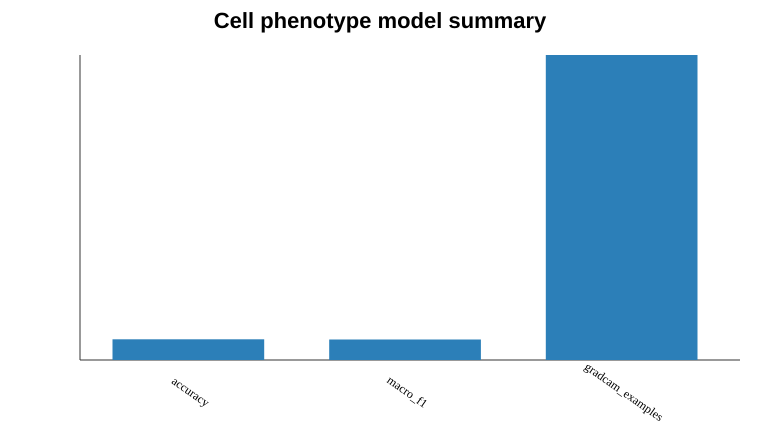

Bench to Bytes portfolio analysis report. Uses only public or synthetic data.
A transfer-learning image classifier can distinguish broad cell phenotypes and use GradCAM-style inspection to check whether image regions are biologically meaningful.
Public-data-ready project structure for Broad Bioimage Benchmark Collection datasets, with a synthetic manifest and demo metrics included for reproducibility.
data/image_manifest.csvoutputs/model_metrics.csvoutputs/confusion_matrix.csvfigures/model_summary.svgThe demo metrics show the reporting structure expected for a real BBBC experiment: accuracy alone is not enough, so confusion patterns and image-level explanations are part of the workflow.
